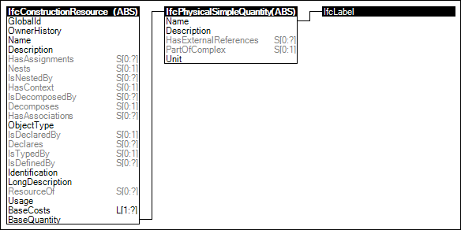

Link to this page
Link to this pageResources may be defined according to a base quantity, where assigned tasks consume such amount of resource relative to an output quantity.
For work-based resources such as labor and equipment, quantities are based on time. For product-based resources, quantities are based on count. For material-based resources, quantities are based on volume.
Figure 92 illustrates an instance diagram.
 |
Figure 92 — Resource Quantity |